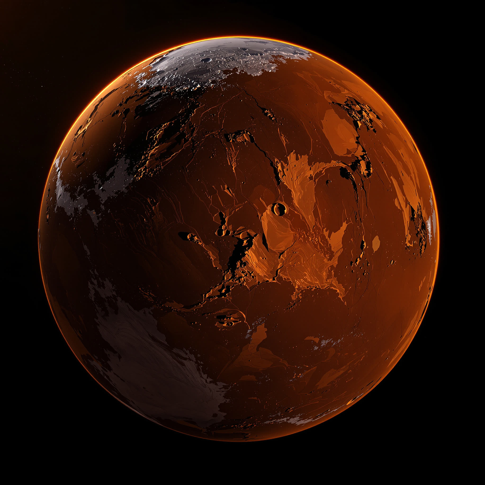

PLANET
KESH
02 — SURFACE DOSSIER
DRAG THE SCROLL WHEEL HORIZONTAL PLATE
The Long Cut
A single canyon system runs 4,180 km along the equator and never exceeds 9 km in width. Erosion cannot do this. Nothing else we have imaged does it either.
- LENGTH
- 4,180 km
- DEPTH
- 7.2 km
Polar Cap
Carbon dioxide over water ice, layered in 214 visible strata. Each stratum is a year we did not watch. The cap retreats 40 km in the warm season and returns exactly.
- STRATA
- 214
- SWING
- 40 km
Dust Season
Global opacity events last 61 to 74 days and raise the mean surface temperature by 19 K. Between them the atmosphere is clearer than vacuum has any right to be.
- DURATION
- 61–74 d
- ΔT
- +19 K
Remanent Field
No active dynamo. The crust remembers one anyway — banded magnetisation in the southern highlands, 800 nT, frozen in place some three billion years before we arrived to read it.
- STRENGTH
- 800 nT
- AGE
- ~3.0 Gyr
Verdict
Habitable at the margins. Two candidate landing shelves at 14°N. Recommend a second cycle with ground penetration before any crewed approach.
NEXT WORLD